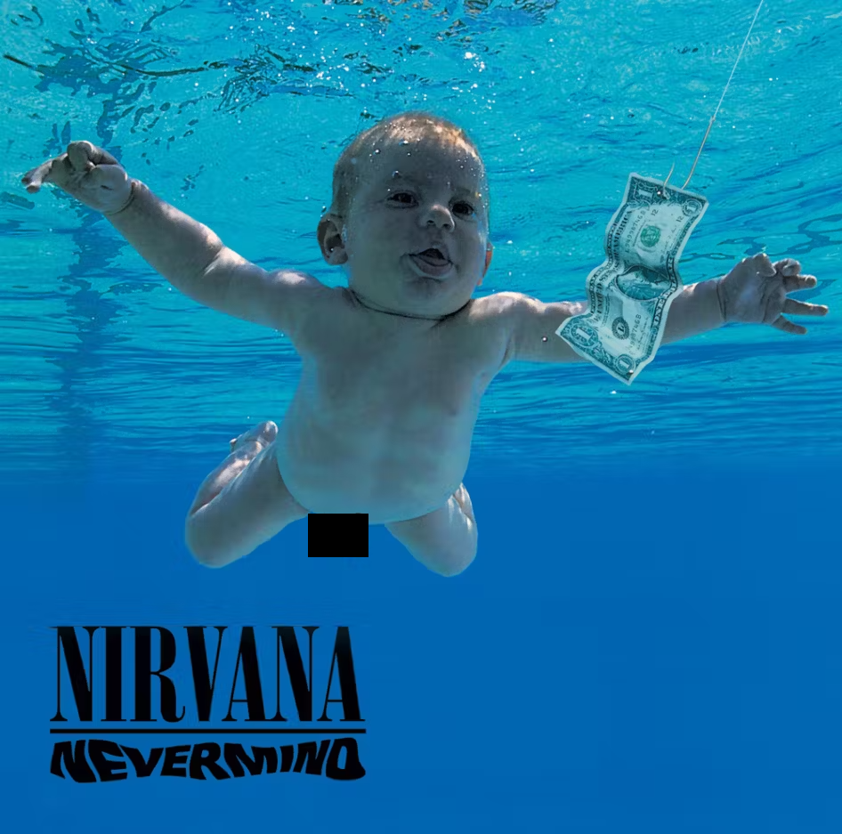

Pop
Most Popular Artists Of All Time
Michael Jackson
Queen
ABBA

Michael Jackson - Thriller (1982)
Rock
Most Popular Artists Of All Time
The Beatles
The Rolling Stones
Led Zeppelin

The Beatles - Abbey Road (1969)
Rap
Most Popular Artists Of All Time
2Pac
Eminem
Snoop Dogg

2Pac - All Eyez On Me (1996)
EDM
Most Popular Artists Of All Time
Avicii
Daft Punk
Skrillex

Daft Punk - Random Access Memories (2013)
Country
Most Popular Artists Of All Time
Merle Haggard
Hank Williams
Johnny Cash

Johnny Cash - At Folsom Prison (1968)
Jazz
Most Popular Artists Of All Time
Louis Armstrong
Duke Ellington
Miles Davis

Louis Armstrong - What A Wonderful World (1968)
Classical
Most Popular Artists Of All Time
Bach
Mozart
Beethoven

Beethoven
R&B/Soul
Most Popular Artists Of All Time
Otis Redding
Marvin Gaye
Sam Cooke

Marvin Gaye - What's Going On (1971)
Indie/Alternative
Most Popular Artists Of All Time
Nirvana
Imagine Dragons
Nirvana
file Nirvana - Nevermind (1991) [genitalia censored]
Latin
Most Popular Artists Of All Time
Shakira
Marc Anthony
Selena Quintanilla

Shakira - Fijación Oral, Vol 1 (2005)